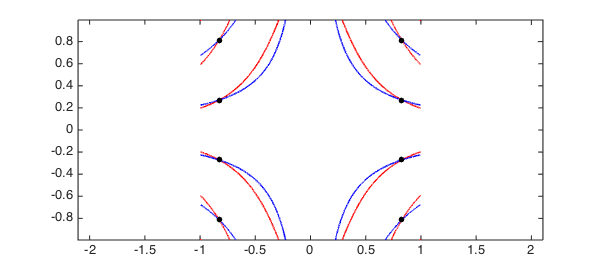
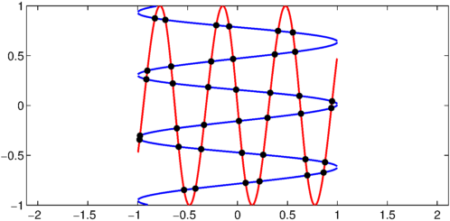
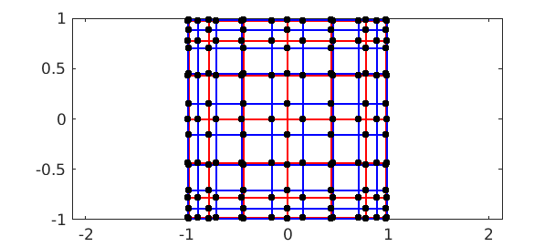
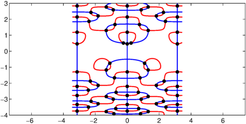
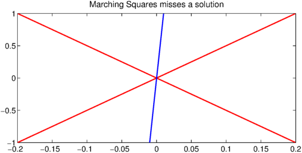
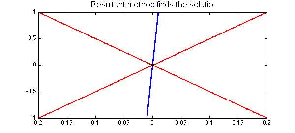

LW = 'linewidth'; lw = 1.6; FS = 'fontsize'; fs = 14; MS = 'markersize'; ms = 20;
Bivariate rootfinding
Here we explore a new algorithm in Chebfun2 by Nakatsukasa, Noferini, and Townsend for computing the solutions to bivariate rootfinding problems,
$$ f(x,y) = g(x,y) = 0, \quad (x,y)\in [-1,1]\times[-1,1], $$
where $f$ and $g$ are represented by chebfun2 objects. Numerically, this problem can be solved by many different methods such as the homotopy continuation method [3], the two-parameter eigenvalue method [1], the resultant method [2], and Marching Squares [4,5]. More information on existing numerical methods for bivariate rootfinding can be found in [2].
Univariate rootfinding is one of the most important capabilities of 1D Chebfun and one expects that bivariate rootfinding will become equally crucial for Chebfun2. Early versions of Chebfun2 used a contouring algorithm based on Marching Squares [5], which is adequate for many examples, but not completely robust (see below). As of today, the new Chebfun2 employs a resultant method based on Bezout matrices, regularisation, and 2D subdivision [2]. We have found this approach to be numerically robust, and surprisingly efficient for high degree examples. In this Example we will play with the Chebfun2 command roots, but for details of the new algorithm we refer the reader to [2].
Optional arguments and defaults
The new Chebfun2 roots command allows for a third argument to supply a user preferred method. The syntax roots(f,g,'resultant') and roots(f,g,'marchingsquares') employ the new resultant based algorithm and the old Marching Squares approach, respectively. For example
f = chebfun2(@(x,y) cos(7*x.^2.*y + y)); g = chebfun2(@(x,y) cos(7*x.*y)); r = roots(f,g,'resultant'); % r = roots(f,g,'marchingsquares'); % uncomment to use Marching Squares plot(roots(f), 'r', LW, lw), hold on plot(roots(g), 'b', LW, lw) plot(r(:,1), r(:,2), 'k.', MS, ms) axis equal, hold off

By default the new Chebfun2 roots command employs the resultant method if the degrees of $f$ and $g$ are less than 200 and Marching Squares otherwise. However, we always treat the computed zeros from Marching Squares with suspicion.
Here are a few examples:
Example 1: Travelling waves
Here we take an example so the zero contours of $f$ and $g$ look like orthogonally travelling waves.
w = 10; f = chebfun2(@(x,y) sin(w*x-y/w) + y); g = chebfun2(@(x,y) cos(w*y-x/w) - x); tic, r = roots(f, g, 'resultant'); toc plot(roots(f), 'r', LW, lw), hold on plot(roots(g), 'b', LW, lw) plot(r(:,1), r(:,2), 'k.', MS, ms) axis([-1,1,-1,1]), axis equal, hold off
Elapsed time is 4.916588 seconds.

The new algorithm based on the resultant method does not compute the zero contours of $f$ and $g$, but we display them throughout this Example to visualise the computed solutions.
Example 2: Coordinate alignment
Traditionally, resultant methods have numerical difficulties when many solutions are aligned along a coordinate direction, and some implementations use a change of variables to prevent any solutions aligning in this way. In [2] a careful case-by-case study is provided to show that these numerical difficulties are not inherent to a resultant method. For example
f = chebfun2(@(x,y) cos(7*acos(x)).*cos(7*acos(y)).*cos(x.*y)); g = chebfun2(@(x,y) cos(10*acos(x)).*cos(10*acos(y)).*cos(x.^2.*y)); tic, r = roots(f, g, 'resultant'); toc plot(roots(f), 'r', LW, lw), hold on plot(roots(g), 'b', LW, lw) plot(r(:,1), r(:,2), 'k.', MS, ms) axis([-1,1,-1,1]), axis equal, hold off
Elapsed time is 19.565704 seconds.

The diagram above shows that we have found all the solutions, and we can get a rough idea of the error in the computed solutions by computing the residual:
max( norm(f(r(:,1),r(:,2))), norm(g(r(:,1),r(:,2))))
ans =
2.401254443675995e-13
For this example the exact solutions can be derived and the computed solutions checked to be very accurate.
Example 3: Autonomous system
Here we repeat an example from [4]:
rect = [-3.45 3.45 -4 3]; f = chebfun2(@(x,y) 2*y.*cos(y.^2).*cos(2*x) - cos(y), rect); g = chebfun2(@(x,y) 2*sin(y.^2).*sin(2*x) - sin(x),rect); tic, r = roots(f, g, 'resultant'); toc plot(roots(f), 'r', LW, lw), hold on plot(roots(g), 'b', LW, lw) plot(r(:,1), r(:,2), 'k.', MS, ms) axis(rect), axis equal, hold off
Elapsed time is 10.119146 seconds.

Failure of Marching Squares
It is easy to derive a rootfinding problem that causes Marching Squares to fail. For instance, here is a problem where the two solutions are missed:
d = [-.2 .2 -1 1];
f = chebfun2(@(x,y) (y - 5*x).*(y + 5*x), d);
g = chebfun2(@(x,y) 0.01*y - x + .0001, d);
r = roots(f, g, 'ms')
plot(roots(f), 'r', LW, lw), hold on
plot(roots(g), 'b', LW, lw), axis(d);
title('Marching Squares misses a solution',FS,fs)
r =
[]

We can compute the correct solutions by using the resultant method:
r = roots(f, g, 'resultant');
plot(roots(f), 'r', LW, lw), hold on
plot(roots(g), 'b', LW, lw)
plot(r(:,1), r(:,2), 'k.', MS, ms), axis(d)
title('Resultant method finds the solution',FS,fs)

References
-
P. A. Browne, Numerical methods for two-parameter eigenvalue problems, PhD. Thesis, University of Bath, 2008.
-
Y. Nakatsukasa, V. Noferini, and A. Townsend, Computing the common zeros of two bivariate functions via Bezout resultants, Numerische Mathematik, to appear.
-
A. J. Sommese and C. W. Wampler, The Numerical Solution of Systems of Polynomials Arising in Engineering and Science, World Scientific, 2005.
-
Chebfun Example roots/MarchingSquares
-
A. Townsend and L. N. Trefethen, An extension of Chebfun to two dimensions, SIAM Journal on Scientific Computing, 35 (2013), C495-C518.